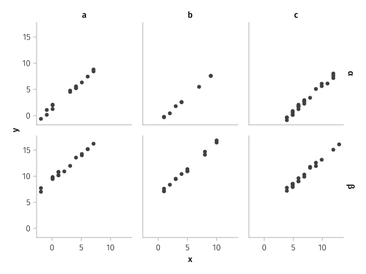
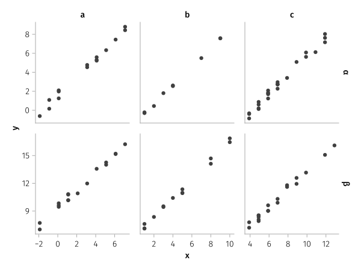
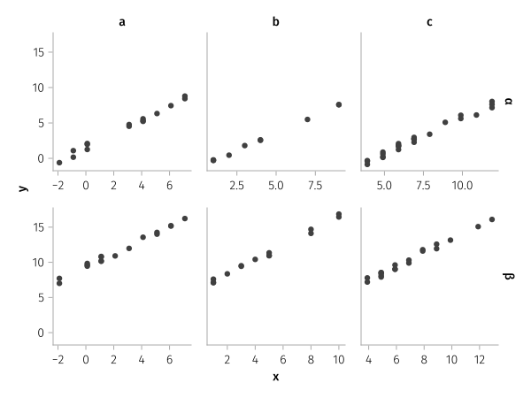
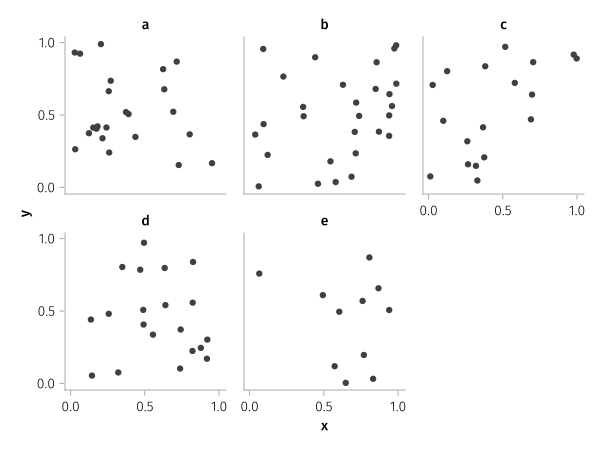
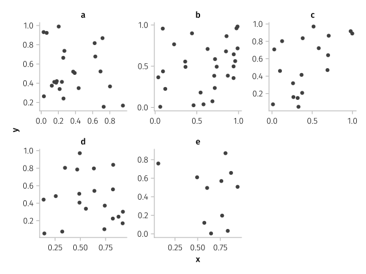
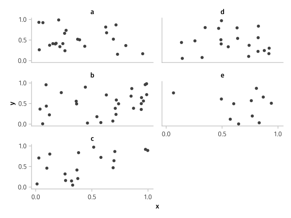
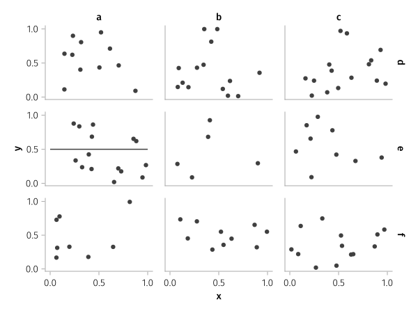
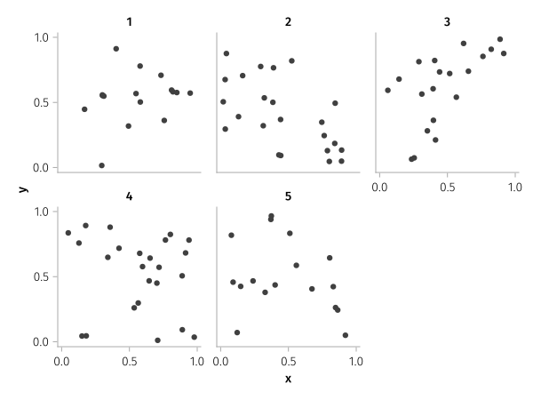
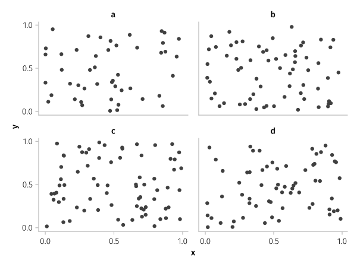
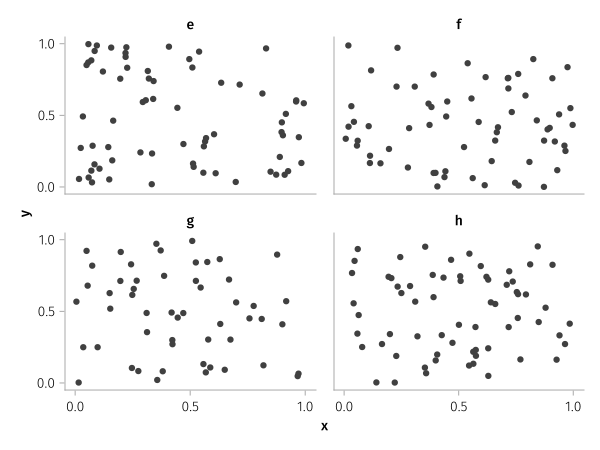

Faceting

using AlgebraOfGraphics, CairoMakieFacet grid
df = let
N = 100
x0 = rand(1:10, N)
i = rand(["α", "β"], N)
j = rand(["a", "b", "c"], N)
x = map(zip(x0, j)) do (xx, jj)
shift = jj == "a" ? -2.9 : jj == "c" ? 2.9 : 0.0
xx + shift
end
y = map(zip(x0, i)) do (xx, ii)
shift = ii == "α" ? -3.9 : 3.9
xx + 2 + shift + rand()
end
(; x, y, i, j)
end
plt = data(df) * mapping(:x, :y, row=:i, col=:j)
draw(plt)
Facet grid with minimal axes linking needed to remove ticks
draw(plt, facet=(; linkxaxes=:minimal, linkyaxes=:minimal))
Facet grid with unlinked x-axes
draw(plt, facet=(; linkxaxes=:none))
Facet wrap
df = (x=rand(100), y=rand(100), l=rand(["a", "b", "c", "d", "e"], 100))
plt = data(df) * mapping(:x, :y, layout=:l)
draw(plt)
Facet wrap with unlinked axes
draw(plt, facet=(; linkxaxes=:none, linkyaxes=:none))
Facet wrap with specified layout for rows and cols
draw(plt, scales(Layout = (; palette = [(1, 1), (2, 1), (3, 1), (1, 2), (2, 2)])))
Adding traces to only some subplots
df1 = (x=rand(100), y=rand(100), i=rand(["a", "b", "c"], 100), j=rand(["d", "e", "f"], 100))
df2 = (x=[0, 1], y=[0.5, 0.5], i=fill("a", 2), j=fill("e", 2))
layers = data(df1) * visual(Scatter) + data(df2) * visual(Lines)
fg = draw(layers * mapping(:x, :y, col=:i, row=:j))
Caveats
The faceting variable must be non-numeric. If the source is numeric, you can convert it with nonnumeric.
df = (x=rand(100), y=rand(100), l=rand([1, 2, 3, 4, 5], 100))
plt = data(df) * mapping(:x, :y, layout=:l => nonnumeric)
draw(plt)
Pagination
If you have too many facets for one figure, you can use paginate to split the data into several subsets given a maximum number of plots per layout, row or column.
Note that pagination is considered an experimental feature. In the current implementation, scales and layouts are not synchronized across pages. This means that, e.g., linked limits on one page are not influenced by limits of other pages. The exact synchronization behavior can be subject to change in non-breaking versions.
df = (x=rand(500), y=rand(500), l=rand(["a", "b", "c", "d", "e", "f", "g", "h"], 500))
plt = data(df) * mapping(:x, :y, layout=:l)
pag = paginate(plt, layout = 4)PaginatedLayers with 2 entries (layout = 4)The object returned from draw will be a Vector{FigureGrid}.
figuregrids = draw(pag)2-element Vector{AlgebraOfGraphics.FigureGrid}:
FigureGrid()
FigureGrid()You can either extract single figures from this vector...
figuregrids[1]
or use draw with an optional second argument specifying the index of the page to draw.
draw(pag, 2)
This page was generated using DemoCards.jl and Literate.jl.